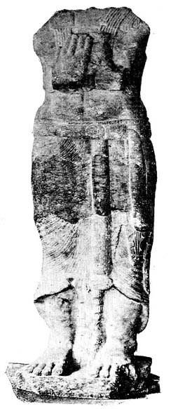
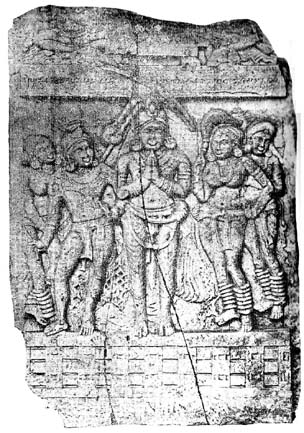
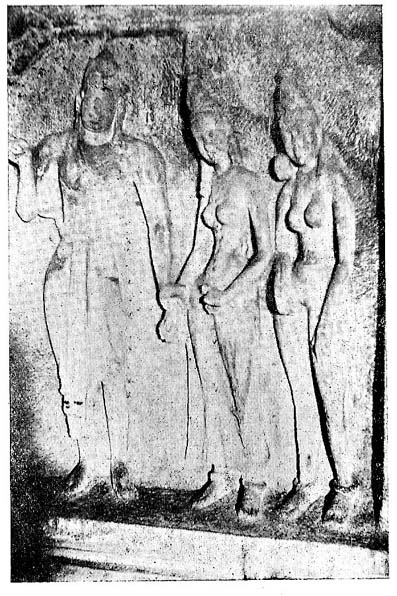
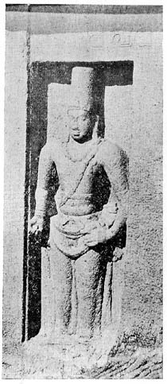
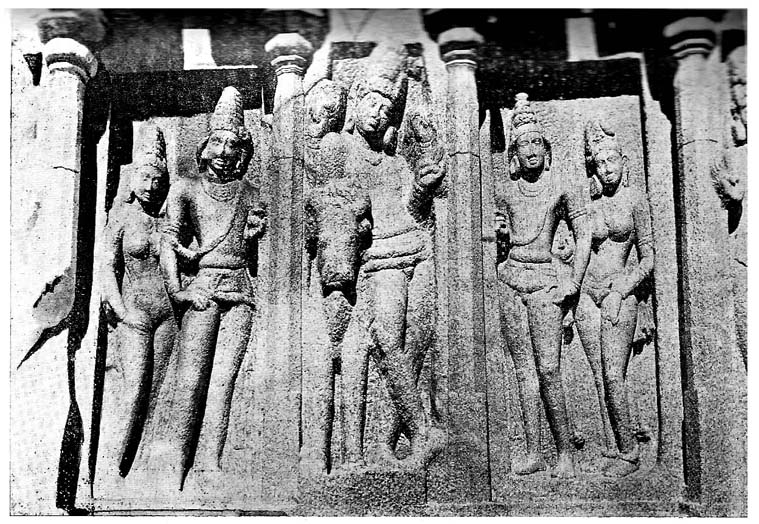
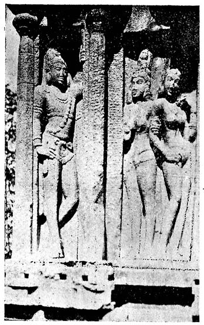

SOUTH INDIAN PORTRAITS
By T. G. ARAVAMUTHAN, M.A., B.L.
I
PORTRAIT SCULPTURE IN NORTH INDIA
AND CEYLON
Well-authenticated portrait statues are rare in India' : so wrote an able authority on Indian art not many years ago.1 This paucity was one of the symptoms on which the critic based a theory of ‘Hindu disinclination to or aversion from realistic likeness,' though, in the same breath, he made practically an admission that the paucity was due to no temperamental infirmities of the Hindu. 2
In at least one part of India,- the southern,- there have survived enough examples of the art of sculptural portraiture to compel us to abandon without ado,- in so far at least as that part of India is concerned,- the theory of Hindu disinclination to realism, all too confidently asserted. In examining the examples and the history of this branch of south Indian art, comparison with examples from other parts of India and with the course of its evolution in those areas is almost inevitable and is certainly illuminating.
For the most authentic of the earliest examples of portrait sculpture in India we have to go to a cave in the Nanaghat, a pass between Poona and Nasik, leading to the town of Junnar from the Konkan country. On the sidewalls of the cave are engraved two of the oldest inscriptions of western India, in characters of about the earlier half of the second century B. C.,3 recording the performance of certain sacrifices. Mutilated badly as the inscriptions own are, they are found to narrate the performance of the sacrifices at the instance of a widowed queen and they mention her husband (a king), two sons of this couple, the king's father (himself a king), and the father of the queen (a feudal baron),- six personages in all. On the back-wall of the cave are found seven badly damaged figures carved in bas-relief and above each figure a name is found incised. Though the figures themselves have disappeared almost completely, the labels are still decipherable and indicate that the figures represent a king and a queen, the king's father, three princes and a feudal baron. The almost close correspondence in the number and the dignities of the persons indicated by the labels and mentioned by the narrative inscriptions, should suffice, by itself, as a reason for suggesting that both the narrative and the labels refer to the same persons. But we have the additional circumstances that the names also tally and that the labels and the narrative are incised in characters of the same period. The conclusion seems to be therefore irresistible that the figures represented the queen at whose instance the sacrifices were celebrated and those relations of hers who derived spiritual benefit there from. On a study of the inscriptions and on a consideration of many relevant circumstances, it has been settled that the figures represent King Satakarni, and his wife, father, brother, two sons and father-in-law. The sacrifices were performed at the instance of the queen, evidently because her husband and father-in-law were both dead and her two sons were too young to have exercised sovereign power. There can be little doubt that when these sacrifices were performed and the inscriptions were engraved, king Simuka Satavahana and king Satakarni were not alive except in memory and that It is only the others that could possibly have granted sittings to the sculptors who carved those bas-reliefs on the cave-wall. The probabilities, therefore, are, on the one hand, that the artists were content to execute portraits of the deceased from the memory or from previously executed representations, and, on the other hand, that there was no objection to the lineaments of a person yet in the flesh being fixed in carved stone. The order in which the figures are marshalled 4 seems to suggest that certain principles were followed:- regard paid to closeness of relationship, order of descent and the exigencies of the occasion. These seven persons must have been those for whose spiritual benefit the sacrifices were offered and in these seven figures we have a gallery of portraits figuring a royal family famous in the history of the Dekkhan in the second century B. C. and exemplifying the principles according to which portrait groups were executed in ancient India. But it is one of the numerous ironies of Indian history that the figures themselves - the earliest portraits of indubitable authenticity in all India, - are now irretrievably lost.

1 GAUTAMIPUTRA SATAKARNI
An equally indisputable representation of a king was found in excavations made near Mathura (Muttra) in northern India. It is a standing figure of life-size. Though, unfortunately, it is now in a mutilated condition,- all that portion of it above the chest having disappeared,- an inscription which it bears makes it clear, beyond the shadow of a doubt, that it was intended to represent king Kanishka (c. 120 A.D.), and the identification has been accepted without question. Though it has been recognised that the sculptor 'has shown considerable skill in faithfully portraying the great king' and that the drapery' seems to retain a faint recollection of classical sculpture,' yet so crude is the workmanship and so flat the general effect that there can be no doubt that ‘ the maker of this image, whatever his nationality may have been, was certainly not inspired with the ideals of Grecian Art.'5
Fragments of other statues were also found close by and they too have been the subjects of identifications. The inscription on one of them has been deciphered, though not beyond dispute, as the name of another ruler, Chastana (c. 80-110 A.D.)6, who was Great Satrap under Kanishka's line, - to which he was also probably related by ties of blood. Another statue, a colossal figure seated on a throne, has been identified, on the strength of a probable reading of an inscription on the pedestal, as that of Wema Kadphises, another member of the dynasty to which Kanishka belonged, and arguments have also been advanced to show that the statue was completed in, - probably before, - the sixth year of Kanishka's reign.7 These statues were all found practically within one series of buildings, part of which at least seems to have been a temple, and near by were discovered traces of a tank. As the inscription on the pedestal of the last mentioned statue refers also to a devakula, a garden, a tank and a well, the suggestions have been made that these statues were all placed originally in the devakula, and that the garden and the tank belonged to the days when the devakula was constructed or was repaired. Another statue of which some fragments only are now found, at a place not far distant from Mathura, has been sought to be identified, again on the basis of an inscription, as one of Kanishka's son8. If these identifications are correct, - or, at any rate, if the suggestion that all the fragments represent kings is plausible, - we have some justification for believing that all the statues might have stood at one time under the roof of a devakula before vandals laid impious hands on them and broke and flung them out.
The purpose of these devakulas is not clear; perhaps they were intended as memorials to departed kings. That at about this time it was usual to erect monuments to the memory of princes is quite clear from an inscription of a relation of Pushyamitra, the great Sunga king (184-148 B.C.), which records that a 'ketuna (a funeral memorial or flagstaff or a statue-house) to Phalgudeva' was ‘caused to be made ' by his son9. Pushyamitra having been one of the protagonists of renaissant Brahmanism, we may perhaps infer that this memorial would not have been erected if Brahmanism had not sanctioned the raising of such monuments to the deceased.
Excavations at the ruins at Sahri-Bahlol, in the Peshawar district, belonging to about this time, have brought to light numerous and varied examples of portrait sculpture. 'The frequency with which the donors are represented in the relievos10 usually occupying the face of the image-base, adds human interest to these sculptures. The most common device shows them in pairs worshipping before an incense-bearing altar; but we find them also in attitudes of worship on either side of a small Buddha image and occasionally forming regular family groups. . .as where the sacred begging-bowl is the object of worship. In the base panel of (a) fine Bodhistava image . . .the artist has endeavoured to introduce a more individuel touch, for here we see on one side of the incense-bearing altar besides the donor two smaller figures, probably meant for his sons, while on the other side a youth in working attire reduced to a loin cloth drives a plough with two oxen. . . .11. Special interest attaches to two statues which unmistakably are intended to represent pious donors. The male one, nearly life-size and of excellent execution but badly injured, shows a realistically modelled portrait head and curious details of costume, including striped trousers tucked into top boots; the left holds the base of what may have been a miniature stupa or shrine. The other figure representing a female, with some indistinct object in her hands, suggests by its execution a much later date12. Here too the dress and hair present points of interest. Along with these may be mentioned a curious statue13 about two and a half feet in height showing a figure with a striking elderly face unmistakably modelled from life and in distinctly realistic fashion14.'
Archaeological remains of equal antiquity in other parts of India contain figures which cannot but be portraits. It has been confidently asserted by an able authority that ‘the alto-relievos on the inner facades of the Chaityas at Karle and Kanhari represent families of (the Andhra) dynasty.'15 In the chaitya cave at Kodane, 16 one of the earliest of Indian cave temples, there appears 'a single figure' beside which runs an inscription to say that it was ‘ made by Baluka, the pupil of Kanha (Krishna), 17. ‘Doubtless it represented the excavator of the chaitya, and is the earliest salika or portrait statue, of which we have any remains; but unfortunately it has been entirely defaced. The elaborate and unique style of the head dress- almost all that is left of it- sufficiently indicates the care which the artist had bestowed on it.' There is also reason to believe that 'a similar figure (possibly a female) existed in that corresponding position on the right hand side of the entrance' 18. In the caves at Udayagiri and Khandagiri in Orissa we have a number of figures which seem to represent historical personages, - especially donors19. In the ruins at Amaravati 20, we seem to have some sculptures which must have been portraits 21. To a somewhat later age belongs a vihara-cave at Ajanta 22, in which is shown 'a worshipper or salika' as an attendant on the Buddha 23. 'It is a male figure of somewhat less than natural size, kneeling before the throne on the right hand of the image, with his hands joined in an attitude of devotion, but holding a small cup or small bowl. It was probably intended to represent the excavator of the cave or at least of the shrine '24. On each side of the entrance of the chaitya cave at Kanheri 25 we have a panel with figures carved in it26, and the fact that the figures ‘have a finish scarcely anywhere else displayed, suggests that they were meant to be portrait-statues of the excavators of the cave and their wives'27.

2 AGHEYA-VACHAKITA-VERA
The Satakarni relievos at Nanaghat, the salikas at Kondane and Ajanta, the relievo-panels at Kanheri, the carved donors of the Udayagiri and Khandagiri caves, and the statues of the Kushan group at Mathura show how, as early as the beginning of the 2nd century B. C., the art of portrait sculpture was practised in the middle of India and how in about a century thereafter it was practised in almost every other part of India. Individual sculptures and family groups are equally common and the sculptor found patronage as much at the hands of the Brahmanical rulers as at those of chiefs who were devotees of the Buddha. Statues fully in the round are as common as relievos and it was not quite unusual for statues to be placed in a statue-house resembling a temple located in a grove and in close proximity to a tank. The figures stood with hands clasped in salutation or they reverently crouched in the sacred presence or placed the right hand with pride on the sword which had proved itself irresistible on many a battle-field. Almost all the motives which could furnish incitement for the carving or the setting up of these Sculptures are found exemplified here, - the commemoration of the performance of a sacrifice, the construction of a chaitya or a cave, the making of lavish gifts to the deserving, the devotee's anxiety to stand for ever praying in the presence of his God and the prepetuation of the memory of a line of kings or of a family or even of one individual28.
We may pass on to an examination of some sculptures which, being suspected to be of even earlier date, are likely to be of greater value for the study of this branch of sculpture if they could be shown to be portraits.
Three statues have been well-known for about a century, but they have recently attained celebrity, having become the subjects of a hot controversy which arose out of an attempt to identify them as portraits of certain early Indian kings. The value of these statues is enhanced by the fact that these seem to be among the few of the earliest specimens of the plastic art of India which have survived, - especially among those figures which are carved fully in the round and are not mere relievos, low or high, or are not ‘engaged’ in a wall or other object. Two of these three statues were discovered together, near Patna.29 They are standing figures, - one of them is now headless, - of about the height of men and are excellent works of art. Inscriptions found carved on them have been so variously read that while one set of scholars claim the figures to be statues of kings, another set declares them to be mere icons, probably of yakshas.30 But even among those who oppose the theory that the statues are those of kings are to be found some who admit that the statues must belong to days as early as the Mauryan times, if not earlier,31 and that 'the artistic monuments of the Mauryan epoch represent an art in an advanced stage of development which supposes generations of artistic efforts and experience behind them'32. so there is no inherent objection to these figures being ascribed to a pre-Mauryan period, If the inscriptions can be shown to be of that age, nor could there be any objection to their being considered portraits of kings, provided the inscriptions can be so read and iconographical considerations point to no other identification. The inscriptions have been read as referring to Udayin-Aja and Nandi-Vardhana, - both of them kings of the Sisunaga dynasty, - the former (484-467 B.C.) being the founder of Pataliputra, and the latter (449-409 B.C.) a great conqueror-king of that line. But these readings have been contested and, - even where the readings have been granted, - the identifications have been disputed. Viewing these statues as mere figures, some regard them as representations of men, while others take them to be icons of deities or supernatural beings. The two figures bear a very close resemblance to each other, but the resemblance may be explained as being due to the figures representing two members of the same family or, perhaps, twin-deities33.
Another statue, also a standing figure, found at Parkham near Mathura,34 has been identified as a statue of an earlier king of this line, Kunika Ajatasatru (c. 515 B.C.) on the strength of an inscription,35 but, here again, neither the reading of the inscription nor the identification of the figure is free from controversy. The capital of Ajatasatru was Rajagriha, but the statue was found far a way near Mathura: one explanation is that it was set up near Mathura as a memorial of victory, that place, having been taken by Ajatasatru,36 or in commemoration of some gift37, and another is that it was perhaps originally, installed in Rajagriha but was susequently transferred to the vicinity of Mathura by Kanishka who is known to have carried away trophies from Magadha to that city38.
A fourth figure, - this time, one seated on a round chair, but mutilated and decapitated by some vandal, - was found in a village some twelve miles from Mathura. The statue is in the pure Hindu style and an inscription on it, estimated to belong to about 470 B.C., has been read as referring to Darsaka, a successor of Ajatasatru39.
If we may treat these four pieces of sculpture as portraits and if we accept the identifications, we would have statues of four kings of the Sisunaga dynasty, - Kunika Ajatasatru (c. 51.5 B.C.), Udayin-Aja (484-467 B.C.), Darsaka (c. 470 B.C.) and Nandi-Vardhana (449-409 B.C.). Two of the statues come from near Mathura and the other two from Maghada, - there being just a chance that those found near Mathura had been removed from the vicinity of Patna. All of them seem to belong to the style of the pre-Mauryan period.
The acceptance of the contention that these four statues are portraits would justify the conclusion that portrait sculpture had made remarkable progress in north India as early even as the 5th century B. C.

4 MAHENDRAVARMAN I AND HIS QUEENS
This group and the Kushan group, - if they are portrait sculptures, - would, with the Satakarni group, form the three earliest portrait groups known to Indian history and stand as distinct landmarks in the development of Indian art.
Portraiture in stone had certainly become popular by the second century B. C. and was perhaps practised, with eminent success, even three centuries earlier. Though few specimens of these early periods have survived, we have satisfactory proof that the art continued to be popular in the mediaeval period of north Indian history.
‘Royal cemeteries,’ are said to be 'still common in Rajputana.' It is added: 'They are called Chhatris or umbrellas: They are erected not only to rajas but to other illustrious dead and more specially to persons dying in war. Royal cemeteries are set apart at one place. Sometimes they contain statues, sometimes they do not. There are royal cemeteries at Jaipur, Jodhpur and other Rajputana capitals. But the place containing the royal chhatris at Bikanir is called Devagadh. . . At this place there are statues of all the Bikanir rajas, from the fourth downwards. There is another Devagadh for the first three rajas near the walled town. The present devagadh is six miles distant from the former one. The statues are worshipped every day and food is offered to them. The Priests are Sakadvipi Brahmanas (called Sebakas). They do not object to partaking the food offered to the dead rajas. The kings who died in wars are represented on horse-back. Their ranis who ascended funeral pyres of their husbands are also represented as standing by their husbands'40.
King Wun Raj (Vana Raja) is said to have erected, about 742 A.D., a temple at Unhilpoor to ' Panchasura Parusnath ' and to have placed in it an image of himself ‘in the attitude of a worshipper, covered however, by the scarlet umbrella, denoting his royal state.' 41 The statue, which is of white marble, stands about three feet high and holds its hands joined in salutation; 42 but its ‘claim to be the original image of traditions is not authenticated,' and it is a very inferior specimen of sculptural skill because of 'awkwardness of pose and want of art in composition.' Adjacent to this statue stands another, - that of Vana Raja's divan or minister.43 The temples of Rajputana seem to be comparatively wealthier in portrait sculpture than other parts of north India proper and examples of work of about the twelfth century A. D. seem to be not unknown44.
In the uttermost recesses of north India, in tracts now included in the kingdom of Nepal, the art found votaries and patrons such as perhaps it did not find elsewhere.
In the Jogesvara temple near Panwanowla in the Almora district of Nepal, ‘ three almost life-sized brass images of former donor Chand Rajas - Paunchand, Dipchand, and Trimulchand, - stand facing the lingam,' and one of them serves 'as a graceful dipdan holding the lights in its hands most reverently.'45 The large number and the unusual excellence of Nepalese portrait statues have been noticed and admired. Statues of Newar kings adorn the crests of tall pillars, the king being shown seated or kneeling, with hands clasped in salutation, and often shaded by an umbrella or a hooded cobra. Romance is sometimes busy with these monuments, as in the case of the statue of 'Yogendra Mall, the mysterious king who disappeared about 1700, and whom people refuse to believe dead.' It is said that 'before his disappearance he had given to his minister a final instruction: so long as the face of his statue remained clear and brilliant, So long as the bird on his head had not flown away, it should be concluded from those signs that he was still alive. The face of the king is shining, and the bird is always in its place. And every evening the mattress is placed in a room on the facade of the durbar and the window is kept open in the expectation of his return.'46 The statues of the kings are in many instances surrounded by those of their consorts and children. So excellent is each statue that 'it indicates the thought of the master-mind and the touch of the master-hand' and so effective is the display that 'it is doubtful if any country in the world has conceived a more artistic memorial statue than those to be observed in the public squares of the cities of Nepal.' Nor are statues of the commonalty wanting either in number or in quality.47 Founders of benefactions to temples and people of even low degree who contributed only according to the slenderness of their means were not precluded from having their likenesses, - along with those of the other members of their family, if they so wished, - placed in the temples which had profited through their bounty, however modest. Even in the case of the statues of kings, 'the figure itself, regarded as a portrait is broadly treated and seems to reproduce the general character of the sitter while the features appear to have been studied from life but conventionalised in order to be in conformity with the entire scheme.'48
In the temple of Kamakhya at Gauhati, in Assam, stand two statues representing respectively Nar-Narayan (or Maka-deb), a king of the Koch dynasty, and his younger brother, Sukla-deb who built the temple in 1565 A. D.49
It has been said that 'a special characteristic of Tibetan art is the abundance of realistic, highly individualised portrait statuettes of holy Lamas and other: Buddhist saints' 50 and that ‘the most interesting department of Tibetan, as of Mongolian pictorial art, is that of portraiture.' 51 The influence of Nepal and thus of India is indisputable in this development, of Tibetan art.52
Ceylon too developed, similarly, what seems to have (been almost a school of sculptural portraiture in very early times. 'Portrait statues supposed to be, those of ancient kings are a speciality of Ceylonese art. . .two battered examples . . seem to be of high antiquity. One of these, traditionally believed to represent king Devanampiyya Tissa, the contemporary and friend of Asoka, which was found near the Ambusthala dagaba at Mihintale, eight miles from Anuradhapura, may be correctly attributed by the popular voice.' other ancient statues, - though not equally ancient, - are also found in various places in Ceylon.53 In the Dekkhan and in north India the art of portrait sculpture has thus been shown to have flourished from early times. North Indian influence kindled the artistic impulse and shaped the development of this branch of art, not only in Nepal but in Tibet and Ceylon as well. Did South India feel and respond to the stirrings of the impulse which in other parts of India, - and even in countries beyond, - was being nobly realised in portraits of Stone and Metal?
(1) V. A. Smith, HFAIC., 238.
(2) lb., 496.
(3) Buhler in Burgess, ECT., 73.
(4) Simuka Satavahana (the king's father), queen Nayanika or Naganika (the widow who had the sacrifices performed), king Satavahana (whose widow is the queen Naganika), prince Kumara Bhayala (evidently the brother of king Satavahana, the one person not mentioned in the inscriptions), Maharathi Tranakiyaro (feudal baron and father of queen Naganika) and two princes, Kumara Hakku-siri (Sakti Sri) and Kumara Vedi-siri Satavahana (sons of king Satavahana and queen Naganika). - For a full discussion of the inscriptions see Buhler's note in Burgess, ECT., 59-74, and compare ASI. AR., 1924 : 88.
(5) Dr. J. Ph. Vogel, in ASI.AR., 1912: 120-7.
(6) K. P. Jayaswal, in JBORS., (1919), v. 5[1, announced this discovery of B. Bhattacharya, who himself wrote on it in lb., (1920), vi. 51-3.
(7) By K. P. Jayaswal, lb., (1920), vi. 12-22.
(8) By K. P. Jayaswal, lb., (1919), v. 5-10.
(9) Also by K. P. Jayaswal, lb., (I924), v. 202-8.
(10) ASI.AR., 1912, pl. xxxvi, fig.2; pl. xl, figs. 9, 11, 12; pl. xli, fig. 15; pl. xlv, fig, 26; pl. XlVI, fig. 27; pl. XlVIII, fig. 33.
(11) lb., 1912, pl. xl, fig. 12.
(12) lb., 1912, pl. xli, fig. 13.
(13) lb., 1912, pl. Xli, fig. 14
(14) Sir Aurel. Stein, lb., 1912: 106-7.
(15) Burgess, BSA., 97.
(16) Karjat Tq., Kolaba Dt.
(17) Burgess, BCT., 9, fig. 9,
(18) Ib., 9-10
(19) ASI.AR., 1923 : 130-2.
(20) Sattenapalle Tq., Guntur Dt,
(21) Burgess, BSA., 97.
(22) Bhokardan Tq., Aurangabad Dt. (Hyderabad State).
(23) Burgess, BCT., 47, and pl. 37, fig. I.
(24) lb., 47.
(25) Thana Dt.
(26) Burgess, BCT., pl. 4.
(27) lb., 62.
(28) For some examples of later portrait sculpture in the Dekkhan, refer to ASI.W.AR., 1904 : 30 : 81-2; 31 : 87,89; 53 : 44; 1910 : 41-2 : 123-7.
(29) They are now in the Indian Museum, Calcutta.
(30) The theory that they are portrait statues of kings was advanced by K. P. Jayaswal and supported by authorities like R. D. Banerji, MM. Hara Prasad Sastri, Oja and Arun Sen. The stoutest opponents of the theory are O. C. Gangoly, R. P. Chanda, Dr. L. D. Barnett and Dr: R. C. Majumdar. The more important of the papers on this and allied questions are the following: -
K. P. Jaswal, JBORS., (1919), v. 88-109, 214-5, 516-542; (1920), vi 12-22, 173-
R. D. Banerji, Ib., (I9I9), v. 210-4; (1920) VI. 40-50.
MM. H.P. Sastri, Ib., (1919), v. 552-63.
Arun Sen, Ib" (1919), v. 542-9.
Discussion in London, Ib., (1919), v. 512-6.
O.C. Gangoly, Modern Review, 1919 Oct., 419-24.
Dr. R. C. Majumdar, JBORS, (1920), VI. 474-; IA., (1919), XlVIII.
25-8; Journal of Department of Letters, Calcutta University, (1921),
iv. 47-84, and ASI. AR., 1923: 164-70.
N. G. Majumdar, Indian Historical Quarterly, ii. 441-6.
(31) O. C. Gangoly, in Modern Review, 1919 Oct., 424.
(32) Ib., 419.
(33) Ib., 421-4.
(34) Now in the Mathura Museum.
(35) Also by K. P. Jayaswal, JBORS., (1919)v. 550-1; (1920), vi. 173; see also
B. C. Bhattacharya, Ib., (1919), v.402-4.
(36) K. P. Jayaswal, Ib., (1920), vi. 176.
(37) MM. Hara Prasad Sastri, Ib., (1919), v. 563.
(38) K. P. Jayaswal, Ib., (1920), vi. 176.
(39) Also by K. P. Jayaswal, Ib., -(1924), x. 203, and Modern Review, 1921 Nov., 611-4.
(40)MM. Hara Prasad Sastri, JBORS., (1919). v. 559. See also ASI.W AR., 1907: 29 : 13 ; 31-2 : 21, 23; 1908 : 56-7 : 51; 1909 : 39 : 7; 1910 : 46 : 14; 1911 : 40 : 16; 42 : 22; 1912 : 53 : 7.
(41) Forbes, Ras Mala, i. iii.
(42) Burgess and Cousens, Architectural Antiquities of Gujarat, 44,
(43) Ib., 6, 44,.
(44) V. A Smith, HFAIC., 206-7; see also ASI.W .AR., 1905: 53 : 40; 56: 54; 1906 : 57 : nos. 2120-1; 1910: 50 : 26; 58 : 49; 1912 : 57 : 23 ; 1914 : 65 : 23.
(46) Prof. Sylvain Levi, in Indian Art and Letters, (1925), i. 55.
(47) See, for instance, figure of donor in A. K. Coomaraswami and G. K. Duggirala, Mirror of Gesture, pl. viii.
(48) P. Brown, Picturesque Nepal, 70-1, 156-161
(49)Sir E. A. Gait, History of Assam, 55-6. I must thank Rai Bahadur Rama Prasad Chanda for having drawn my attention to these statues.
(50) V. A. Smith, HFAIC., 198.
(51) Ib., 318.
(52) See, for instance, Prof. Sylvain Levi, in Indian Art and Letters, (1926), i. 49-67.
(53) V. A. Smith, HFAIC., 88-92 ; for later examples, see lb., 241-2.
II
SOUTH INDIAN PORTRAITS TO THE END OF
PALLAVA TIMES

5 NARASIMHAVARMAN I
The instinct for portraiture seems to have been as strong in the south of India as in the north and portraits as excellent as any in north India have been produced by south Indian artists. Very little search has been made for these sculptures but numerous examples are bound to reward diligent search.
Relievos of donors have been found at Amaravati and two of them deserve special attention.
One is a mutilated figure [Fig. I] 1 which represents a devotee of high station who, in his hands joined in salutation against his breast, holds some lotus-buds.2 So careful is the chiselling that 'the pattern' of the clothing, - 'almost to the threads of the cloth, - has been minutely represented.'3 The statue would have been truer to life had it been given greater depth and it might have also gained in dignity, but probably the sculptor had a double objective in making it thin almost as a lath: he suggested perhaps that the subject had Andhra blood in his veins - for a very Andhra type is the tall and spare figure leaning forward slightly, - and he called attention to the high status of the devotee by accentuating the height. Standing as the sculpture does much taller than the human stature, it must have been a very striking piece among the monuments of Amaravati. Indeed, the figure is taller than any of the other carvings of human figures at Amaravati and is one of the few pieces executed fully in the round. The motif too is that of the humble devotee standing devoutly beside the structure he had raised or embellished in honour of his deity. So characteristically Andhra is the figure, so emphasised is the height, so appropriate is it as the figure of a devotee and so good is the technique that we are driven to conclude that this statue was intended for the likeness of some potentate who contributed in ample measure to the raising of the monuments at Amaravati.
Along the folds of the drapery runs an inscription which, though partly obliterated, contains a lady's name, - Gotami or Gautami.4 If to the circumstances already noticed we add the further facts that the stupa of Amaravati was largely embellished by the great Andhra kings, Gautamiputra Sri Satakarni I and Gautami-putra Sri Yajna Satakarni II (of the first and the last quarters respectively of the 2nd century A.D.), that each of these kings had evidently a Gautami for his mother, that one of the Gautamis, could have installed, it the architectural out-growths of the stupa, a statue of her son in the posture of a devotee and that this statue was recovered from behind the outer railing of the stupa,' 5 one of its older features, - we have perhaps sufficient basis for believing this statue to be a representation of one of the two Gautamiputra Satakarnis.
The other [Fig. 2] represents a group, the principal figure in which is a devotee who was, in all probability, a chief of the name of Agheya-Vachakita-Vira. We have only to look at the figure on either side of him to be convinced that the sculptor's aim was individual portraiture.
South Indian art has, so far, furnished no other examples of portraiture till the Pallava times are reached. The gap between Amaravati and Mahabalipuram is wide, both in chronology and in art: none the less we have hitherto chanced on no specimens of portraiture which could be attributed to the intermediate period.
What is perhaps the very earliest and the most explicit epigraphic reference in all India to the practice of setting up statues of human beings is to be found in two inscriptions on two pillars in a cave temple half-way up the rock at Trichinopoly. 6 On entering the cave (which opens on the south) and turning east we find at the eastern end of the cave a small sanctuary facing the west, carved out of the rock. In the cave itself stand four pillars, on either side of the shrine, imparting to the cave the appearance of a hall supported by eight pillars. 'Engraved on the pilaster to the right of the sanctuary and at a spot which appears to have been selected for the principal inscription' is the name Sri Mahendra Vikrama, and 'the pillars at the other end of the hall contain a number of names and birudas, among which is Gunabhara.' On two of the supporting pillars of the cave are to be found two important Sanskrit inscriptions. One of them runs thus: 7
On the other pillar are found four verses which are equally interesting: -
1. Being afraid, that the god who is fond of rivers (Siva), having perceived the Kaveri, whose waters please the eye, who wears a garland of gardens, and who possesses lovely qualities, might fall in love (with her), the daughter of the mountain (Parvati) has, I think, left her father's family and resides permanently on this mountain calling this river the beloved of the Pallava (king).
2. While the king called Gunabhara is worshipper of the linga, let the knowledge, which has turned back from hostile (vipaksha) conduct, be spread for a long time in the world by this linga!
3. This mountain resembles the diadem of the Chola province, this temple of Hara (Siva) its chief jewel, and the splendour of Sankara (Siva) its splendour.
4. By the stone chisel a material body of Satyasandha was executed, and by the same an eternal body of his fame was produced.
It is well known that the titles Gunabhara, Satrumalla and Satyasandha are among those borne by the Pallava king, Mahendravarman I, and it is well ascertained that this rock cut temple itself was only one of the many similar temples which that king, true to his other title, Vichitrachitta, 'the curious minded,' 8 set the fashion of constructing in south India.9 Eliminating all the imagery of the verses of these inscriptions and discarding the quaint conceits which the poet delights in elaborating, we may interpret the verses to mean that Mahendravarman installed a stone-image of Siva in the temple and achieved immortality for himself by placing in it a statue in his own image. Neither the sanctuary nor the cave-hall contains at present any figure which could be taken for a likeness of a king. A panel representing Siva as Gangadhara is found carved on the wall opposite the shrine but this cannot be the image of Siva mentioned in the verses, for it is not in the sanctuary. The likeness of the king, and the Siva image, in the form of a linga, which are spoken of in the verses, would therefore seem to have both disappeared. In the sanctuary we find two socket-holes, one larger than the other, cut into the floor, - the larger being in the centre of the sanctuary and the smaller being on one side of it; these two sockets may represent the positions of the two principal images of the shrine. Further, both the sockets being a few feet from the walls of the sanctuary, we may be sure that the two images were not mere relievos but were statues fully in the round. The larger socket-hole represents naturally the location of the linga. We cannot be sure if in the smaller socket-hole was planted a figure of Parvati, of which the second inscription speaks, or the figure of the king himself of which mention is made in both the inscriptions. In another cave temple, constructed by this same king, we have' as will be noticed presently, a relief of him carved on one side of the entrance of the sanctuary, and in other rock-cut temples constructed by his successors the fashion was followed of carving in them relievos of the king who constructed them. We may naturally expect that in the Trichinopoly cave temple the figure of the king was carved in relief, but no trace of even a decayed or mutilated piece of sculpture is to be discerned anywhere in the cave or in the sanctuary. In these circumstances we might perhaps have some justification for assuming that the figure which stood beside Siva in the sanctuary was that of Mahendravarman himself, and not of Parvati. If this conjecture is sound, we have to admit that the figure must have been a piece of detached sculpture carved quite in the round.

6 A ROYAL COUPLE ON EITHER SIDE OF SIVA
Whether a statue in the round or a mere relief, the figure is lost and we cannot now judge of the lineaments of the king. The inscriptions are positive that the king's likeness was set up during his own lifetime and the chances are, therefore, that it was carved by one who had abundant opportunities of observing the king's features. This statue or relief, whichever it was, not only furnishes the earliest known example in south India of the builder of a temple setting up in it a likeness of himself , - if we exclude the figures at Amaravati, - but also shows that a builder of a temple was not obliged to instal in it a full gallery of his family. The second verse of the latter of the two inscriptions is interpreted, - it is a highly probable, an almost indisputable, interpretation, - as indicating the conversion of the king to Saivism by Tiru-Navukku-Arasu, one of the great protagonists and hymnalists of the Tamil school of Saivism. l0 It is a thousand pities that it did not strike this great king who prayed that ‘the knowledge which had turned, from hostile conduct' should ‘ be spared for a long time in this world’, that the features of him who had imparted that "knowledge' to him should, also be similarly 'spared.' It is a great loss that he did not have a statue of his Guru set up, in addition to his own, in this temple where it is that he glories in having turned from the paths of ‘hostile conduct’, for, then, we might have had at least one authentic and contemporary portrait of that great saint instead of the purely conventional images of him for which room is found in every Siva temple of the Tamil country.
Two groups of reliefs, in the northern and the southern niches respectively of the Adi-Varaha cave-temple at Mahabalipuram,11 are of very great interest. In the former niche are carved, in rather high relief, the seated figure of a king and, on either side of him, the standing figure of a queen facing him. [Fig. 3] Over the portal of the niche is engraved a name, Sri Simhavinna-Pottrathirajan. In the other niche are found three figures, the first of whom, a king, leads by the hand a queen behind him who is followed by another queen [Fig. 4]. Over this niche too is found an inscription giving the name, Sri Mahendra-Pottrathirajan. The two groups face each other.12 The inscriptions do not indeed say explicitly that they refer to the reliefs, but they are purposeless if they had not been intended to serve as labels to the figures. From a study of the caves at Mahabalipuram and other similar structures the conclusions have been drawn that ‘ the caves and the rathas of Mahabalipuram were cut in the rock during the reign of Narasimhavarman I (625-50 A.D.) and that they were finished and consecrated during the reign of Paramesvaravarman I (about 675 A.D.)' 13. The Narasimhavarman I spoken of here being the son of Mahendravarman I, the builder of the Trichinopoly temple, we have to ask ourselves if in the relief of the standing figure of the Adi- Varaha temple at Mahabalipuram we behold the features of the king whose statue in the Trichinopoly temple has unfortunately been lost. A relievo should be no unwelcome substitute for a totally missing statue. Who the kings in these niches are will be discussed in another context.
The technique of these sculptures shows that the ability of the sculptor to reproduce the pose of the subject was not quite on a par with his skill in making the features quite expressive. He has not had cunning enough to help Simhavishnu’s queens to carry themselves with grace and naturalness nor has he learnt the art of inducing them to feel that their hands are not excrescences. In studying these figures we cannot but feel that we are still in the very early days of the art which in a few decades was to burst in full bloom over every face and in every crevice of the rocks that nature's hand has strewn at Mahabalipuram.
Simhavishnu is shown seated on a tripod, which is perhaps a substitute for a throne, and his right hand is in the Chin-mudra, quite in consonance with the serenity of his expression. In the other panel, Mahendravarman is shown going to the sanctuary: devoutly he points to it with his right-forefinger and with his left hand he gently leads a queen towards the shrine and she is followed by another who, we may fancy, is much younger. The treatment of the figures in this panel, especially of the queens, shows a slight improvement over that of the figures in the other panel.
The numerous sculptures at Mahabalipuram contain many other figures which were doubtless intended for portraits.
On the outer face of the famous monolithic temple called the Dharma-raja ratha are carved a number of figures with inscriptions above them, - all of which are the birudas or titles of the Pallava king Narasimhavarman I (625-650 A.D.)14 - son of Mahendravarman I. Below one of these inscriptions is an alto-relief [Fig. 5] which, if we may base a conjecture upon the titles blazoned above and around, might be a representation of this king Narasimhavarman I.
In one of the panels on the southern wall of the Arjunaratha we have two reliefs which cannot but be representations of the king who constructed the ratha and of his queen. [Fig. 6.] This group follows the motif of the group of Mahendravarman and his queens in the Adi-Varaha temple, but an unmistakable improvement in posing has taken place. The grace of the carriage of the figures is as great as that of any of the figures pictured at Mahabalipuram. The suggestion that these may represent king Paramesvaravarman I (c. 675 A.D.) and his queen15 is not unacceptable.
In another of the rathas a king stands in one panel [Fig. 7] looking at two ladies in the next panel, one of whom is a, queen [Fig. 8]. The posing has improved greatly, the arms and the hands are no longer inconvenient out-growths and the expression shows that the artist has striven to obtain fidelity to life: indeed the execution is very happy. We have unfortunately no means of deciding with certainly whom these figures portray.
A thin coat of lime and paint being traceable on the reliefs of Simhavishnu and Mahendravarman, we may assume that taking advantage of the figures having been carved in the interior of a temple beyond the reach of
On three of the four Outer faces of the Arjuna ratha are carved a number of reliefs, some of which must be royal groups. They follow the motif of the group of Mahendravarman and his queens in the Adi-Varaha temple. On the southern face are two royal groups, one on either side of a representation of Siva [Fig. 6]. The grace of the carriage of the figures is almost as great as that of any of the figures pictured at Mahabalipuram. In a panel on the northern face is a royal group which might be taken to represent king Paramesvaravarman I (c. 675 A. D.) and his queen 16 Were it not that the number of royal groups in this ratha, the absence of labels and our ignorance of the exact age of the structure make it very risky to venture on an identification.
On the eastern face of the same ratha, a figure which looks almost indubitably that of a king stands gazing at two ladies in the next panel, both of whom appear to be queens [Fig. 7]. The posing has improved greatly, the arms
For lines 15-27 on this page, please substitute the above.
Plates for figures 3 and 8 will be included in the next issue.

7 A ROYAL GROUP
Sun and rain the sculptors had them painted over, while they did not attempt to embellish similarly the other portraits which are carved on walls exposed to the elements.
Round the central shrine of the Vaikunta-perumal temple at Conjeevaram 17 runs a raised verandah the walls of which bear two belts of panels of bas-reliefs, with spaces below for labels. Only some of the spaces have been filled in with labels explanatory of the pictures and even these are not quite intelligible in the present state of our knowledge of Pallava history, 18 but the panels and the labels seem to 'represent the whole history of the Pallavas in pictures.' 19 The temple was built by Paramesvaravarman I (c. 675 A.D.) and finished by Nandivarman-Pallava-malla (c. 742 A.D.)20 but we do not know if these kings contented themselves with picturing the puranic history of the dynasty which is set out in some detail in its inscriptions or whether they sought in these panels to bring the history down to their own times. We seem, however, to have in some of the panels and the subjoined labels an attempt to delineate and describe the incidents which led to the succession of Nandivarman-pallava-malla on the death of Paramesvaravarman II. These panels have not been studied adequately for want of full knowledge of the life and events of those days and we cannot therefore decide if we have any portraits in them.
In the architectural works of the Pallavas we often come across curved panels of human figures some of which at least, though now taken to represent dvara-palakas or gate-keepers, could perhaps more appropriately be identified as portrait sculptures of the builders of the temples. In the rock-cut cave-temple of Kunnandarkoyil 21 stands, for instance, a relief [Fig. 9] which is very probably a portrait of a Pallava: the prominence given to it, the care bestowed on it and its marked individuality suggest that the sculptor had chosen Pallava chieftain for his subject.
We have ample ground for the belief that a careful study of Pallava art and history may reveal more statues of the kings of the Pallava dynasty. Pallava art would still seem to be a field full of promise to investigators.
(1) This fine statue seem, to have been at some time broken into a number of pieces: the head and the arms are missing and have not been traced; the two lower pieces have been put together, but with some 'restoration' which we might well have been spared.
(2) For a similar use of the lotus, see ASI.W.AR., 1904 : 30 : 81.
(3)Burgess, BSA., 96.
(4) EI., xv. 261, fig. 39.
(5) Burgress, BSA., 99
(6) Trichinopoly Tq. and Dt. For a description of the cave and for a plan of it and an illustration of the sculpture, see A. H. Longhurst, Pallava Architecture, (ASI. Memoir 17), i. 13-5, and frontispiece and plan I.
(7) SII., i. 30-1.
(8) SII., i. 28-30.
(9) EI., xvii. 14-7.
(10) Dr. G. Jouveau-Dubreuil, PA., i. 39-40.
(11) EI., iii. 227.
(12) Chingleput Tq. and Dt.
(13) See MER., 1923: 24: 2, and H. Krishna-Sastri, Two Statues of Pallava Kings (ASI. Menoir 26).
(14) Dr. G. Jouveau-Dubreuil, PA., i. 64.
(15) EI., x. 5.
(16) O. C. Gangoly, in Modern Review, 1911 Jan., II.
(17)Conjeevaram Tq., Chingleput Dt.
(18)For illustrations of the panels, see A. Rea, Pallava Architecture, p11. 88-92; for the inscriptions, see SII. T., iv. 138, and for discussions, see MER., 1906: 62-3: 2, and Dr. G. Jouveau-Dubreuil, PA., i. 69-71.
(19)Dr .G. Jouveau-Dubreuil, P A., i. 69.
(20)K. V. Subrahmanya-Aiyar in EI., xviii. 117, and H. Krishna-Sastri Two Statues of Pallava Kings (ASI. Memoir 26), 8-9.
(21)Pudukkotta State.